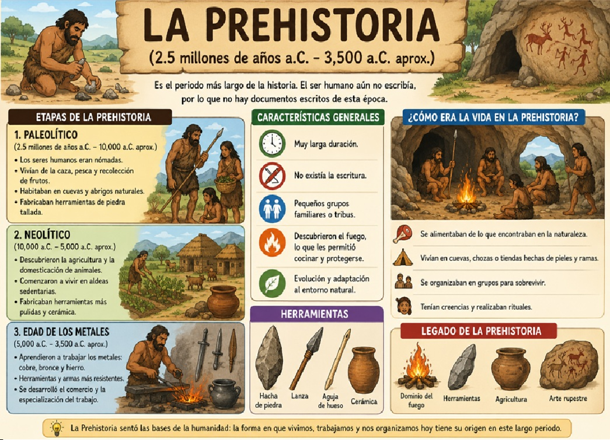
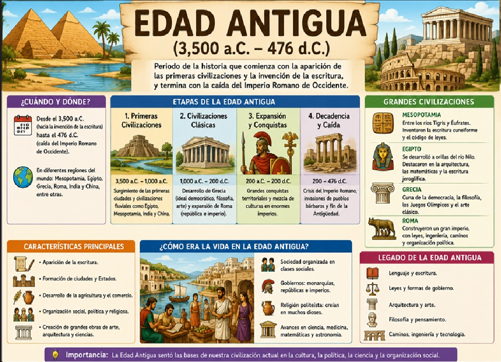
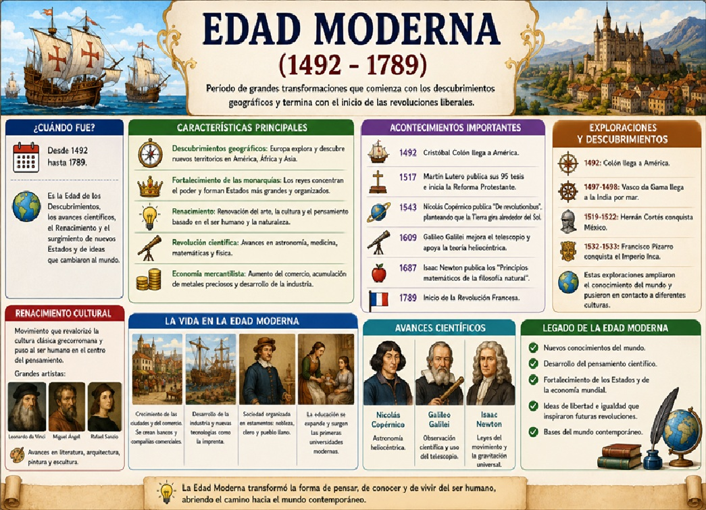
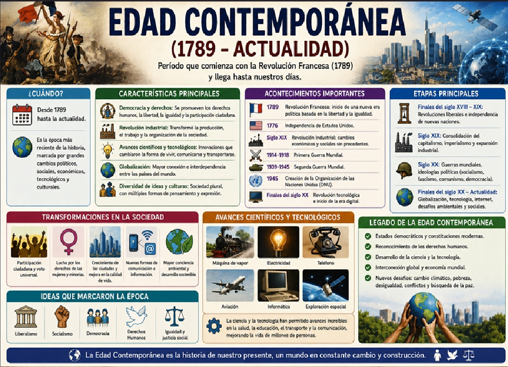
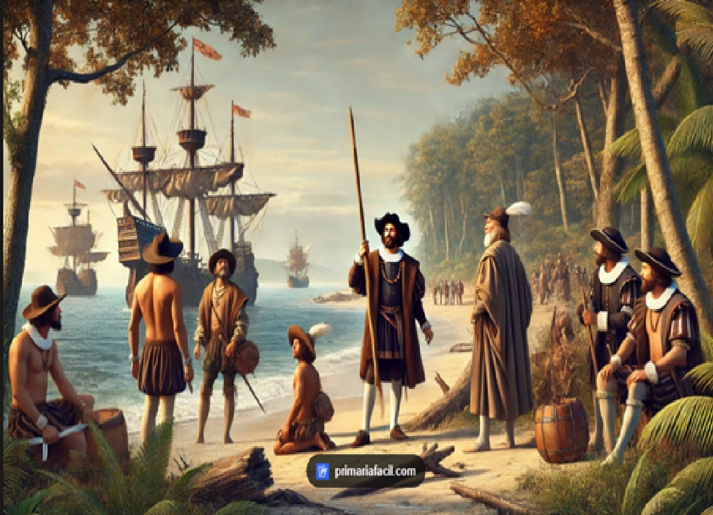
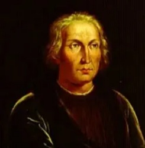

📌 Introducción
La historia de la humanidad es un viaje fascinante que comenzó hace millones de años. Para poder estudiarla y entenderla mejor, los historiadores han dividido el pasado en grandes etapas o periodos, cada uno con características, inventos y formas de vida muy diferentes.
En esta unidad aprenderemos cuáles son las etapas de la historia, desde la aparición de los primeros seres humanos hasta la actualidad. Descubriremos cómo vivían, qué inventaron, cómo se organizaban y cómo esos cambios nos han llevado hasta el mundo que conocemos hoy. ¡Prepárate para viajar en el tiempo!
💡 ¿Sabías que...?
La Prehistoria es la etapa MÁS LARGA de la historia humana. Duró aproximadamente 2.5 millones de años, mientras que la Edad Contemporánea comenzó hace solo unos 200 años. ¡Casi todo el tiempo del ser humano en la Tierra fue prehistoria!
📖 Contenido Principal
Objetivo general
Comprender las principales etapas de la historia de la humanidad, identificando sus características fundamentales, los cambios más importantes y la línea de tiempo que las conecta desde la Prehistoria hasta la Edad Contemporánea.
Objetivos específicos
- Identificar y ordenar cronológicamente las cinco etapas de la historia: Prehistoria, Edad Antigua, Edad Media, Edad Moderna y Edad Contemporánea.
- Describir las características principales de cada etapa (vivienda, alimentación, organización social, inventos).
- Reconocer los acontecimientos que marcaron el paso de una etapa a otra (invención de la escritura, caída del Imperio Romano, descubrimiento de América, Revolución Francesa).
- Valorar la importancia del estudio de la historia para comprender el presente.
📌 Línea de Tiempo: Las 5 Etapas de la Historia
Observa esta línea de tiempo para visualizar el orden de las etapas:
🪨 Prehistoria
🏛️ Edad Antigua
🏰 Edad Media
⚓ Edad Moderna
💻 Edad Contemporánea
🪨 1. Prehistoria (2.5 millones de años a.C. - 3,500 a.C. aprox.)
La Prehistoria es la etapa más larga de la humanidad. Comienza con la aparición de los primeros seres humanos (homínidos) que fabricaban herramientas de piedra, y termina con la invención de la escritura.
🏠 Forma de vida:
- Nómadas: No vivían en un lugar fijo. Se desplazaban siguiendo a los animales y buscando alimentos.
- Cazadores-recolectores: Vivían de la caza de animales y la recolección de frutos, raíces y semillas.
- Vivían en cuevas o chozas hechas con ramas y pieles de animales.
💡 Grandes inventos y descubrimientos:
- 🔹 El fuego: Aprender a controlar el fuego fue el invento más importante. Permitía calentarse, cocinar alimentos y ahuyentar animales peligrosos.
- 🔹 Herramientas de piedra: Cuchillos, hachas, puntas de flecha hechas con piedras talladas.
- 🔹 El arte rupestre: Pinturas en las paredes de las cuevas que representaban animales y escenas de caza. ¡Algunas tienen más de 30,000 años!
🌾 El gran cambio: el Neolítico (Revolución Agrícola)
Hace unos 10,000 años, los seres humanos descubrieron la agricultura y la ganadería. Esto cambió todo: se volvieron sedentarios (vivían en un mismo lugar), construyeron las primeras aldeas y poblados, y comenzaron a domesticar animales como ovejas, cabras y perros.

🏛️ 2. Edad Antigua (3,500 a.C. - 476 d.C.)
La Edad Antigua comienza con la invención de la escritura (alrededor del 3,500 a.C. en Mesopotamia) y termina con la caída del Imperio Romano de Occidente en el año 476 d.C.
🌍 Grandes civilizaciones:
- Mesopotamia: La primera civilización. Inventaron la escritura cuneiforme, la rueda y los primeros códigos de leyes (Código de Hammurabi).
- Egipto: Construyeron las pirámides, desarrollaron la escritura jeroglífica y avanzaron en medicina y astronomía.
- Grecia: Cuna de la democracia, la filosofía (Sócrates, Platón, Aristóteles), el teatro y los Juegos Olímpicos.
- Roma: Crearon un enorme imperio, desarrollaron el derecho romano (base de muchas leyes actuales), construyeron acueductos, carreteras y el Coliseo.
💡 Aportes importantes:
- 🔹 La escritura: Permitió registrar la historia, las leyes y el comercio.
- 🔹 La rueda: Revolucionó el transporte y la agricultura.
- 🔹 Las matemáticas y la astronomía: Los griegos y babilonios hicieron grandes avances.
- 🔹 El derecho y la organización política: La democracia ateniense y el derecho romano.

⚓ 4. Edad Moderna (1492 - 1789)
La Edad Moderna comienza con el descubrimiento de América (1492) y termina con la Revolución Francesa (1789). Es una época de grandes cambios y descubrimientos.
🌍 Grandes acontecimientos:
- Descubrimiento de América (1492): Cristóbal Colón llegó a América, lo que cambió la visión del mundo y permitió el intercambio de productos, culturas y personas entre Europa y América.
- El Renacimiento: Un movimiento cultural y artístico que redescubrió los valores de la antigua Grecia y Roma. Grandes artistas: Leonardo da Vinci, Miguel Ángel, Rafael.
- La Reforma Protestante (1517): Martín Lutero protestó contra la Iglesia Católica, lo que dividió a Europa entre católicos y protestantes.
- La Ilustración (siglo XVIII): Movimiento intelectual que defendía la razón, la libertad y la igualdad. Filósofos como Voltaire, Rousseau y Montesquieu.
💡 Avances científicos:
- 🔹 Copérnico y Galileo: Demostraron que la Tierra gira alrededor del Sol (teoría heliocéntrica).
- 🔹 La imprenta (Gutenberg): Revolucionó la difusión del conocimiento. Los libros pudieron producirse en masa.
- 🔹 Grandes navegaciones: Exploradores como Magallanes y Elcano dieron la primera vuelta al mundo.

💻 5. Edad Contemporánea (1789 - Actualidad)
La Edad Contemporánea comienza con la Revolución Francesa (1789) y llega hasta nuestros días. Es la etapa en la que vivimos actualmente.
🌍 Grandes acontecimientos:
- Revolución Francesa (1789): El pueblo francés se levantó contra la monarquía absoluta. Proclamó los ideales de libertad, igualdad y fraternidad.
- Revolución Industrial (siglo XIX): La invención de la máquina de vapor transformó la producción. Aparecieron las fábricas, los ferrocarriles y los barcos a vapor.
- Guerras Mundiales (siglo XX): La Primera Guerra Mundial (1914-1918) y la Segunda Guerra Mundial (1939-1945) cambiaron el mundo.
- Globalización: El mundo está cada vez más conectado gracias a la tecnología, internet y los medios de transporte.
💡 Avances tecnológicos y científicos:
- 🔹 Internet y computadoras: Han revolucionado la comunicación y el acceso a la información.
- 🔹 Medicina moderna: Vacunas, antibióticos, cirugías avanzadas que han aumentado la esperanza de vida.
- 🔹 Exploración espacial: El hombre llegó a la Luna en 1969. Hoy exploramos Marte y más allá.
- 🔹 Energía eléctrica y renovable: Iluminación, electrodomésticos, energías limpias como la solar y eólica.
✅ Derechos humanos:
- Declaración Universal de los Derechos Humanos (1948).
- Avances en igualdad de género, abolición de la esclavitud y derechos civiles.

⛵ EL DESCUBRIMIENTO DE AMÉRICA (1492)
El Descubrimiento de América es uno de los acontecimientos más importantes de la historia universal. Marcó el inicio de la Edad Moderna y cambió para siempre la forma en que los seres humanos entendían el mundo.

⛵ ¿Qué fue el Descubrimiento de América?
Fue la llegada del explorador Cristóbal Colón al continente americano el 12 de octubre de 1492. Colón había partido desde España con tres barcos —La Niña, La Pinta y La Santa María— buscando una nueva ruta hacia las Indias (Asia) navegando hacia el oeste, pero en su lugar encontró un continente que los europeos no sabían que existía.
🌍 Contexto histórico
A finales del siglo XV, los reinos europeos buscaban nuevas rutas comerciales para llegar a Asia y conseguir especias, seda y otros productos valiosos. Los turcos otomanos controlaban las rutas tradicionales por tierra, así que los europeos necesitaban encontrar una ruta por mar.
👤 ¿Quién fue Cristóbal Colón?

- Nacionalidad: Genovés (de Génova, Italia), aunque navegó para los Reyes Católicos de España.
- Idea: Creía que se podía llegar a Asia navegando hacia el oeste (dando la vuelta al mundo).
- Apoyo: Los Reyes Católicos (Fernando de Aragón e Isabel de Castilla) financiaron su viaje después de que otros reinos lo rechazaran.
🚢 Los tres barcos
| Barco | Capitan | Descripción |
|---|
| La Santa María | Cristóbal Colón | La más grande. Era una nao (barco de carga). |
| La Pinta | Martín Alonso Pinzón | Carabela rápida. Fue la primera en avistar tierra. |
| La Niña | Vicente Yáñez Pinzón | Carabela pequeña pero veloz. |
📅 El viaje paso a paso
- 3 de agosto de 1492: Colón y sus tripulantes salieron del puerto de Palos de la Frontera, en España.
- Septiembre de 1492: Navegaron durante semanas sin ver tierra. La tripulación comenzó a preocuparse y quería regresar.
- 12 de octubre de 1492: ¡Tierra a la vista! Llegaron a una isla del Caribe que Colón llamó San Salvador (actualmente pertenece a las Bahamas).
- Octubre - Diciembre de 1492: Exploraron otras islas como Cuba (a la que llamó Juana) y La Española (actual Haití y República Dominicana).
- 15 de marzo de 1493: Colón regresó a España, donde fue recibido como un héroe.
🌎 ¿Por qué se llamó "Descubrimiento de América"?
Colón murió creyendo que había llegado a Asia (las Indias). Fue el explorador Américo Vespucio quien se dio cuenta de que se trataba de un continente nuevo, desconocido para los europeos. Por eso, el nuevo continente recibió el nombre de "América" en su honor.
⚡ Consecuencias del Descubrimiento
- 🌍 Intercambio cultural: Europa y América comenzaron a intercambiar productos, animales, plantas, tecnologías y personas. Este intercambio se llama "Intercambio Colombino".
- 🍅 Nuevos productos para Europa: Tomate, papa, maíz, cacao (chocolate), frijol, tabaco, piña, aguacate.
- 🐄 Nuevos productos para América: Caballos, vacas, cerdos, ovejas, trigo, arroz, café, azúcar.
- 🏛️ Imperios coloniales: España y Portugal crearon grandes imperios en América. Más tarde también lo harían Inglaterra, Francia y Holanda.
- 😔 Consecuencias negativas: Muchos pueblos indígenas murieron por enfermedades traídas de Europa (viruela, sarampión) y por la violencia de la conquista.
- 🗣️ Lengua y cultura: El español, el portugués, el inglés y el francés se convirtieron en los idiomas principales de América.
💡 Dato curioso
¿Sabías que antes de la llegada de Colón, ya existían en América grandes civilizaciones como los Mayas, Aztecas e Incas? Estas culturas tenían sus propias ciudades, matemáticas, astronomía, agricultura y formas de gobierno. El "descubrimiento" fue un encuentro entre dos mundos que no se conocían entre sí.
📌 Hechos clave que separan las etapas
| Etapa | Inicio | Fin | Hecho que la inició |
|---|
| 🪨 Prehistoria | 2.5 millones a.C. | 3,500 a.C. | Aparición de los primeros humanos |
| 🏛️ Edad Antigua | 3,500 a.C. | 476 d.C. | Invención de la escritura |
| 🏰 Edad Media | 476 d.C. | 1492 | Caída del Imperio Romano |
| ⚓ Edad Moderna | 1492 | 1789 | Descubrimiento de América |
| 💻 Edad Contemporánea | 1789 | Actualidad | Revolución Francesa |
📝 Actividades de aprendizaje
✏️ Actividad 1: Ordena las etapas
Escribe las 5 etapas de la historia en orden cronológico, desde la más antigua hasta la actual:
- ______________________
- ______________________
- ______________________
- ______________________
- ______________________
✏️ Actividad 2: Relaciona cada etapa con su hecho clave
Une con una línea cada etapa con el hecho que la inició:
- 🪨 Prehistoria → ( ) Revolución Francesa
- 🏛️ Edad Antigua → ( ) Caída del Imperio Romano
- 🏰 Edad Media → ( ) Invención de la escritura
- ⚓ Edad Moderna → ( ) Aparición de los primeros humanos
- 💻 Edad Contemporánea → ( ) Descubrimiento de América
✏️ Actividad 3: Preguntas de reflexión
Responde las siguientes preguntas en tu cuaderno:
- ¿Por qué la invención de la escritura fue tan importante para la historia?
- ¿Qué invento de la Prehistoria crees que fue el más importante? ¿Por qué?
- ¿En qué etapa de la historia vivimos actualmente?
- ¿Cuál de las cinco etapas te parece más interesante? Explica por qué.
- ¿Cómo crees que será la próxima etapa de la historia?